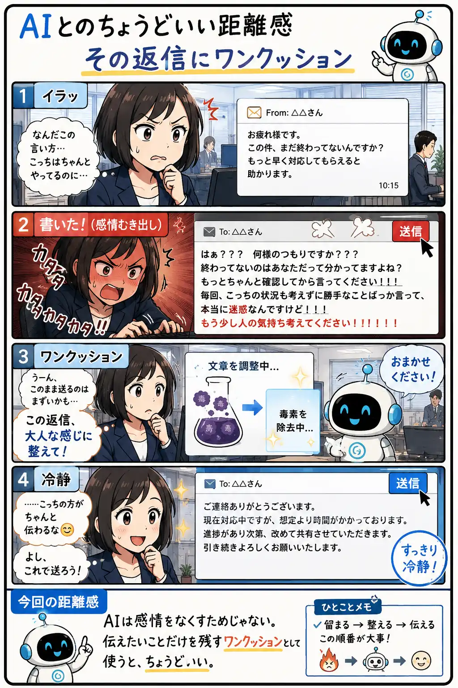

#061
その返信にワンクッション
送信ボタンを押す前に、AIでもうひと呼吸。

メモ
怒っている時ほど、言いたいことと感情が混ざりやすくなります。
そのまま送れば少しスッキリするかもしれませんが、あとから読み返すと「言いすぎたかも」と思うこともあります。
AIに一度整えてもらうと、相手を責める言葉ではなく、本当に伝えたい要点が見えやすくなります。送る前のワンクッションとして使うのも、AIとの付き合い方のひとつです。
今回の距離感
AIは感情をなくすためじゃない。伝えたいことだけを残すワンクッションとして使うと、ちょうどいい。